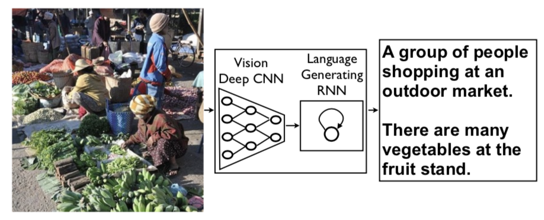
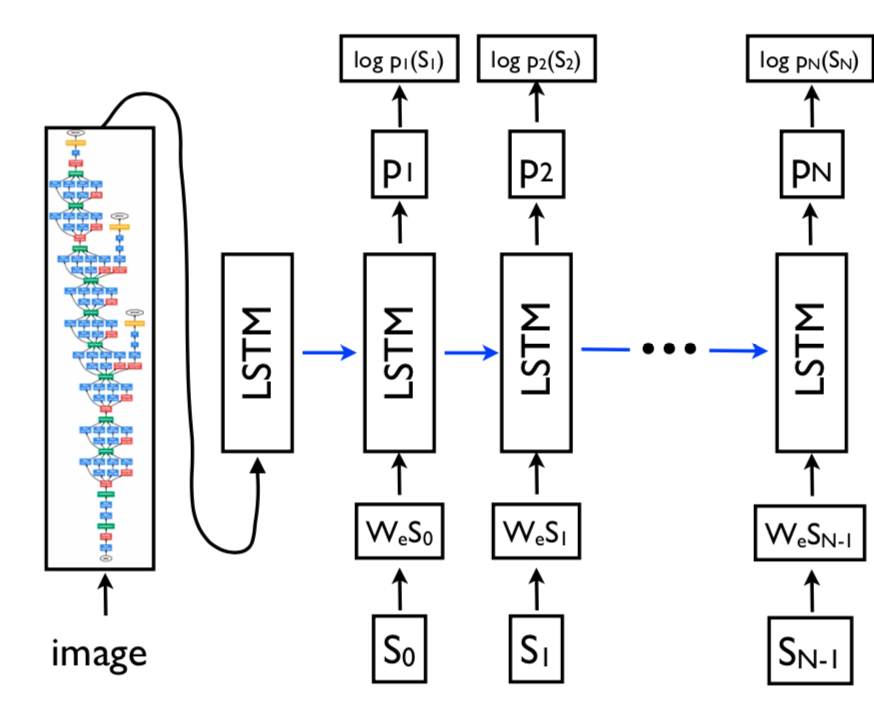

论文题目：《Show and Tell: A Neural Image Caption Generator》
问题描述
图像内容描述是人工智能领域的基础问题，是计算机视觉与自然语言处理的交叉领域。众所周知，CNN在目标检测和识别中的效果非常的出色，而RNN在机器翻译中也得到了充分的发挥。本文就是在两者的基础上对两种模型进行组合形成一个新的生成式模型称为NIC，实现图像内容描述的任务。

作者的思想源泉来自于目前比较前沿的机器翻译，给定一个源句子$S$，将其输入到模型中得到目标语言的句子$T$，模型所要做的就是$\max P(T|S)$。
目前机器翻译中比较火的模型莫属RNNs，RNNs可作为Encoder，把源句子编码成一个固定长度的词向量表示，又可作为Decoder生成目标句子。
在本文中，作者使用CNN来代替RNNs的Encoder功能，将输入图像编码成固定长度的词向量表示，这样做的原因在于CNN在图像特征提取中表现极为出色。CNN+RNNs这种端到端的神经网络使用起来相当方便。
由于普通的RNN会出现梯度消失和梯度爆炸的现象，所以采用更加优良的LSTM模型。
模型结构

如图所示，LSTM+CNN模型就是一个图像内容生成器。CNN将输入图像进行特征表示，生成512维的表示向量输入到第一个LSTM单元中，作为$t=-1$时刻，$S_i$代表某个单词的向量，采用one-hot编码，长度为整个词表的长度，$W_e$是词向量表示，$W_eS_i$为隐含层的词向量表示，长度也为512维。前向传播的过程如下：
上面说到，模型训练的目标为：
其中$I$为输入的图像，$S$为生成的句子，$\theta$是模型的参数，我们要做的就是最大化这个目标函数，获得模型的参数$\theta$。(此处最大似然之后取log形式)
上述Log似然公式，恰好对应到RNN的网络中，在$t$时刻，需要计算当前词$S_t$的概率，则可以将历史词$S_0$到$S_{t-1}$表示为一个确定长度的隐含层神经元向量$h_t$，同时输入图像$x_t$，在$t+1$时刻，隐含层向量被更新：
推断策略
- Sampling：直接将前一个词输入下一个时间点
- BeamSearch：第一个时间点，输出top k个候选词，这k个候选词分别输入第二个时间点，得到若干个第一个和第二个词组合，从这选择得分top k的，输入到第三个时间点，依次迭代
需要注意的点
- 每个时刻的LSTM单元共享一套参数
- 单词采用one-hot的表示方法
- 每个句子前后都有标志词，表示句子的开始和结束
- 图像只需要初始时输入一次（每个时刻都输入，会因噪声很容易过拟合，效果不好）
- 本文使用VGG16训练好的模型参数初始化CNN网络